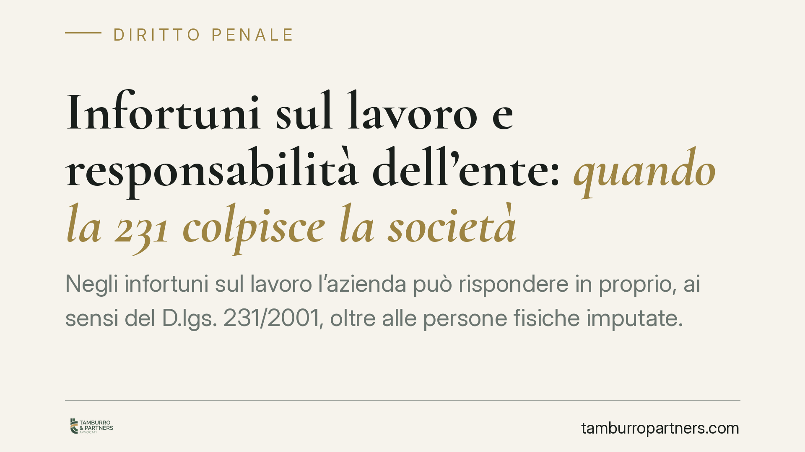

Infortuni sul lavoro e responsabilità dell'ente: quando la 231 colpisce la società
Negli infortuni sul lavoro l'azienda può rispondere in proprio, ai sensi del D.lgs. 231/2001, oltre alle persone fisiche imputate. Il punto critico è il legame tra il reato colposo e l'interesse o il vantaggio dell'ente. La giurisprudenza di legittimità ha chiarito i confini di questo aggancio: capire come funziona è decisivo per impostare la prevenzione e la difesa.

Il quadro: perché un infortunio può coinvolgere l'azienda
Quando un infortunio sul lavoro integra un reato di omicidio colposo o lesioni gravi o gravissime commesse con violazione delle norme antinfortunistiche, la responsabilità non si ferma alle persone fisiche. Può estendersi all'ente collettivo — società, azienda — tramite la responsabilità amministrativa da reato prevista dal D.lgs. 231/2001.
La norma che aggancia questi infortuni al sistema 231 è l'art. 25-septies del D.lgs. 231/2001, introdotto per includere l'omicidio colposo e le lesioni colpose gravi o gravissime commessi in violazione degli obblighi di sicurezza. È questa la porta d'ingresso della responsabilità dell'ente in materia infortunistica.
Inquadramento normativo: interesse e vantaggio
Il cuore della disciplina sta negli artt. 5 e 6 del D.lgs. 231/2001. L'art. 5 stabilisce che l'ente risponde per i reati commessi nel suo interesse o a suo vantaggio da soggetti in posizione apicale o da sottoposti alla loro direzione o vigilanza.
I due criteri vanno tenuti distinti. L'interesse ha natura *ex ante*: è la proiezione finalistica della condotta, la sua tendenziale idoneità a giovare all'ente al momento in cui viene tenuta. Il vantaggio ha natura *ex post*: è il beneficio effettivamente conseguito, valutato a consuntivo.
Nei reati colposi — dove per definizione l'evento (l'infortunio) non è voluto — la giurisprudenza di legittimità, in un orientamento consolidato della Sezione IV penale, ha chiarito che interesse e vantaggio non vanno riferiti all'evento lesivo, bensì alla condotta violativa delle regole cautelari. In concreto: l'ente trae interesse o vantaggio dal risparmio di costi o di tempi ottenuto omettendo le misure di sicurezza (mancate manutenzioni, protezioni rimosse per accelerare la produzione, tagli agli investimenti in prevenzione).
L'art. 6, dal canto suo, disciplina l'esimente: l'ente non risponde se prova di aver adottato ed efficacemente attuato un Modello di organizzazione e gestione (MOG) idoneo a prevenire reati di quella specie, di aver affidato la vigilanza a un Organismo di Vigilanza (OdV) e che il reato è stato commesso eludendo fraudolentemente il modello.
Il nodo della pluralità di posizioni di garanzia
Negli infortuni ricorre spesso una pluralità di posizioni di garanzia: datore di lavoro, dirigenti, preposti, caporeparto. Ci si chiede se la responsabilità dell'ente richieda che il criterio dell'interesse o vantaggio sia riscontrato in capo a ciascun autore, oppure sia sufficiente accertarlo in modo unitario rispetto all'ente.
Sul punto occorre precisione. Il criterio di imputazione oggettiva dell'art. 5 va riferito all'ente considerato nella sua unità, non replicato per ciascuna posizione soggettiva. Ciò che rileva è che la condotta illecita — anche di un solo garante, ad esempio il preposto che rimuove una protezione per velocizzare il ciclo produttivo — sia oggettivamente collegabile a un interesse o vantaggio dell'organizzazione. La responsabilità concorsuale delle persone fisiche resta questione distinta, governata dalle regole sul concorso nel reato colposo.
Segnaliamo che ogni citazione giurisprudenziale utilizzata a supporto di questi principi va verificata quanto a Sezione, numero e data di deposito prima di ogni uso operativo o difensivo: la materia è delicata e le massime vanno lette nella loro motivazione, non semplificate.
Implicazioni pratiche per l'impresa
La conseguenza è netta: l'azienda può essere chiamata a rispondere in proprio anche quando la violazione materiale è ascrivibile a una figura intermedia. Un MOG solo formale, adottato ma non attuato, non protegge. La difesa dell'ente si gioca sulla dimostrazione di un sistema di prevenzione reale, vigilato e tracciabile.
Le sanzioni per l'ente sono pesanti: sanzione pecuniaria per quote e, nei casi più gravi, sanzioni interdittive fino alla sospensione dell'attività.
Cosa fare in concreto
- Adottare e attuare un MOG effettivo: non basta il documento; occorre dimostrarne l'applicazione quotidiana, con procedure vive e aggiornate ai rischi reali dell'attività.
- Coordinare DVR, MOG e OdV: il Documento di Valutazione dei Rischi, il Modello 231 e l'attività dell'Organismo di Vigilanza devono parlarsi ed essere internamente coerenti.
- Rafforzare la vigilanza sulle figure intermedie: preposti e caporeparto vanno formati, responsabilizzati e controllati; le deroghe alle procedure di sicurezza vanno intercettate.
- Tracciare controlli e interventi: manutenzioni, verifiche, audit e segnalazioni devono lasciare evidenza documentale datata e archiviata.
- Verificare le posizioni di garanzia e le deleghe: mappare chi risponde di cosa, con deleghe di funzioni valide e specifiche.
È opportuna una revisione periodica dell'intero impianto organizzativo alla luce dell'evoluzione giurisprudenziale.
---
Contributo informativo a cura di Tamburro & Partners - Avv. Giuseppe Tamburro. Non costituisce parere legale.
Ogni condominio ha una storia a sé.
Se gestisci un'amministrazione e vuoi un confronto su una specifica questione condominiale, scrivi allo studio. Ti rispondiamo entro un giorno lavorativo.